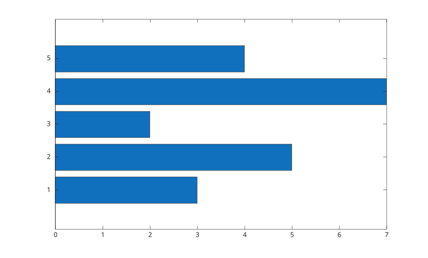
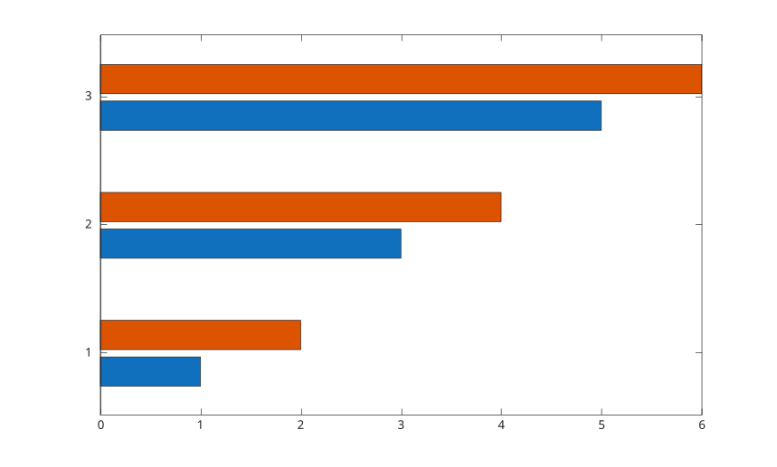
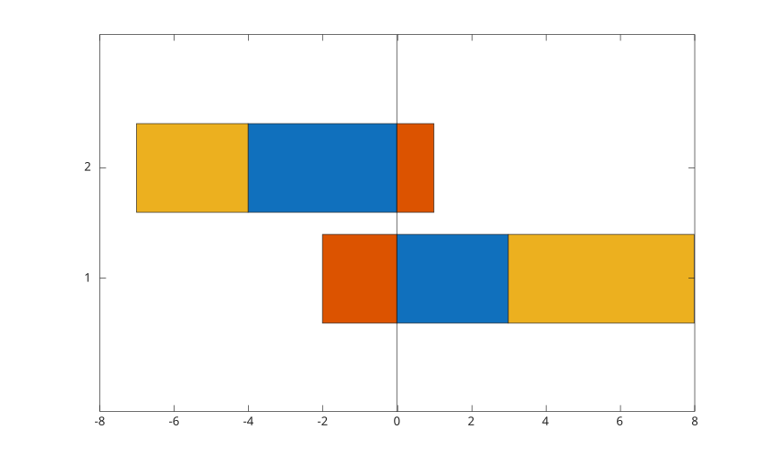

barh(Y)
barh(X, Y)
barh(..., width)
barh(..., color)
barh(..., 'grouped')
barh(..., 'stacked')
barh(tbl, yvar)
barh(tbl, xvar, yvar)
barh(..., propertyName, propertyValue)
barh(ax, ...)
b = barh(...)
| Parameter | Description |
|---|---|
| X | bar positions: scalar, vector, categorical array, string array, or cell array of labels. |
| Y | bar values: vector or matrix. |
| width | bar width, scalar, 0.8 by default. |
| color | color name or short color name. |
| tbl | table or timetable containing the plotted variables. |
| xvar | table variable used for bar positions or labels. |
| yvar | one or more numeric table variables used for bar values. |
| propertyName | bar object property name. |
| propertyValue | bar object property value. |
| ax | target axes object. |
| Parameter | Description |
|---|---|
| b | bar graphics object or vector of bar graphics objects. |
barh creates a horizontal bar graph. Matrix input creates grouped bars by default. Use 'stacked' to stack columns in each group.
For table input, select one variable for labels or positions and one or more numeric variables for values.
f = figure();
y = [3 5 2 7 4];
barh(y);
f = figure();
y = [1 2; 3 4; 5 6];
barh(y, 'grouped');
f = figure();
y = [3 -2 5; -4 1 -3];
barh(y, 'stacked');